Australia and New Zealand have flora and fauna that are found nowhere else on Earth. Australia is distinctive because it is an island, a country, and a continent—the smallest of the world’s continents. No other land mass can concomitantly make those three claims. Australia consists of a large mainland and the island of Tasmania to the south. The main physical area of New Zealand, on the other hand, consists of two main islands separated from Australia’s southeastern region by the Tasman Sea. Australia is surrounded by various seas. The Indian Ocean surrounds its western and southern coasts. Indonesia and Papua New Guinea lie to the north, separated by the Timor Sea and the Arafura Sea. The Gulf of Carpentaria distinguishes Cape York, which extends north along Australia’s eastern coast almost to Papua New Guinea. The Great Barrier Reef runs for more than 1,600 miles off the continent’s northeastern shores. The Coral Sea separates the Great Barrier Reef from the South Pacific. The southern side of Australia is the Great Australian Bight and the island of Tasmania. A bight is a large, wide bay. To the south of Australia and New Zealand is Antarctica. The two countries have distinct physical geographies. Australia is relatively flat with low elevation highlands and an extensive dry interior, while New Zealand has high mountains and receives adequate rainfall.
Figure 12.1 Australia and New Zealand
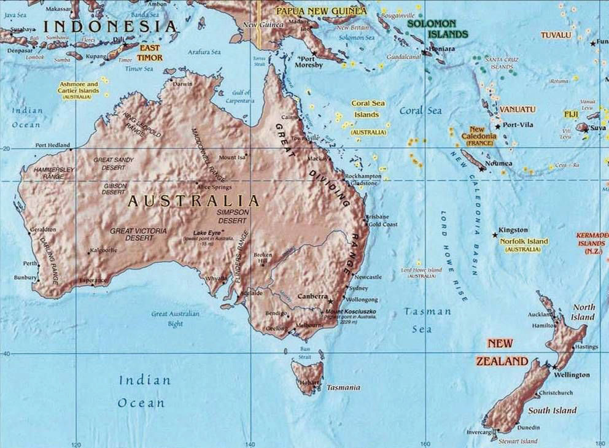The Tropic of Capricorn runs through the middle of Australia. The Tasman Sea separates Australia from New Zealand.
Source: Map courtesy of University of Texas Libraries, http://www.lib.utexas.edu/maps/australia/oceania_ref02.jpg.
Figure 12.2
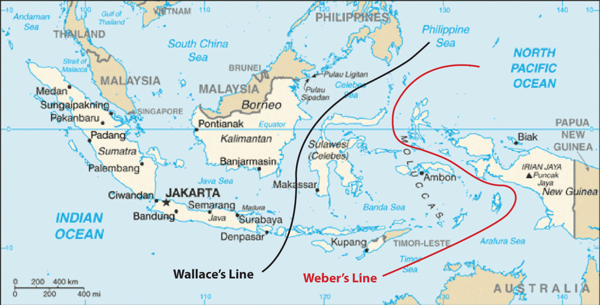Wallace’s and Weber’s Lines were developed independently to account for the differences in biodiversity between the Austral realm and the Asian realm. Scientists continue to analyze the true boundary between the realms. These lines demarcate a clear environmental difference in species development between the two sides.
Source: Updated from map courtesy of CIA World Factbook.
The historic isolation of New Zealand and Australia from the rest of the world has caused animals and organisms that are not found anywhere else to develop in these two countries. The unique biodiversity includes marsupials, or animals whose young are raised in the mother’s pouch, such as kangaroos, wallabies, koalas, and bandicoots. It is believed that these creatures developed separately after the continents broke away from each other more than two hundred million years ago. Many plant species are also unique to this realm. The biodiversity found here is separate from that of Asia. This has been explained by various biogeographers by drawing imaginary lines just north of Australia to indicate the line of division between the Asian realm and the Austral realm. Wallace’s Line and Weber’s LineImaginary lines drawn on a map through Indonesia demarcating the separation of plants and animals between the Asian realm and the Austral realm, which accounts for the uniqueness of the flora and fauna of Australia and New Zealand. are two such examples. Both examples attempt to establish the correct line of demarcation for the differences in species development between the two sides. During the ice ages, sea level was lower, and the many islands of Southeast Asia were connected by land to the mainland. Papua New Guinea was connected to Australia. Wallace and Weber believed that no land bridge connected the Asian side with the Austral side for animals to cross over. This separation caused the organisms to the south to develop independently of those in the north. For example, marsupials are not found on the Asian side of these lines but are found on the Australian side.
New Zealand and Australia were both inhabited before the era of European colonialism. Aboriginal people are said to have migrated to Australia across Southeast Asia from the mainland of Asia more than forty thousand years ago. They made Australia their home and adapted to the physical geography of the continent. For tens of thousands of years before the Europeans arrived, the Aborigines carved out an existence in Australia and developed their cultural ways. Only about four hundred fifty thousand Aborigines remain in Australia today. New Zealand was inhabited by the Polynesian group called the Maori who established themselves on the islands in the tenth century. For hundreds of years they, too, established their culture and traditions in the region before the Europeans arrived. The Aborigines in Australia and the Maori in New Zealand were both confronted with the European invaders. From their standpoint, there was much to lose by the arrival of the Europeans. Lands were lost, new diseases killed many, and control of their methods of livelihood were taken over by Europeans. The Maori initiated a number of wars against British colonizers, but in the end the greater military power gained the advantage. At the present time, the Maori make up less than 10 percent of the population of New Zealand.
The sighting of Australia by the Dutch dates to 1606. Portuguese explorers may have discovered Australia earlier, but there are no written records. In the early 1700s, the northern and western coastlines of Australia were known as “New Holland.” There were no established colonies. James Cook, a naval officer working for the British navy, commanded the good ship Endeavor and mapped Australia’s eastern coast in 1770. He made port at Botany Bay, just south of the current city of Sydney and claimed the region for Britain. He named the land New South Wales. The charting of the coast resulted in continued attention being paid to the region.
Meanwhile, England had a severe problem with overcrowding of its prisons. Its problem was exacerbated by the loss of Britain’s American colonies. Upon Cook’s return to England, interest was generated in the concept of relieving prison overcrowding by sending prisoners to Australia. In 1787, eleven ships with seven hundred fifty convicts sailed from Great Britain to Botany Bay. Prison colonies were established in Australia. By the end of the seventeenth century, the entire Australian continent was under the British Crown. At the same time that the movement of prisoners from England to Australia was diminishing, the next wave of immigration was being fueled by the discovery of gold in the 1850s. The practice of transferring prisoners to Australia ended in 1868. The arrival of the Europeans had caused a serious demise in the Aboriginal population. Aborigines were completely decimated in Tasmania.
Figure 12.3
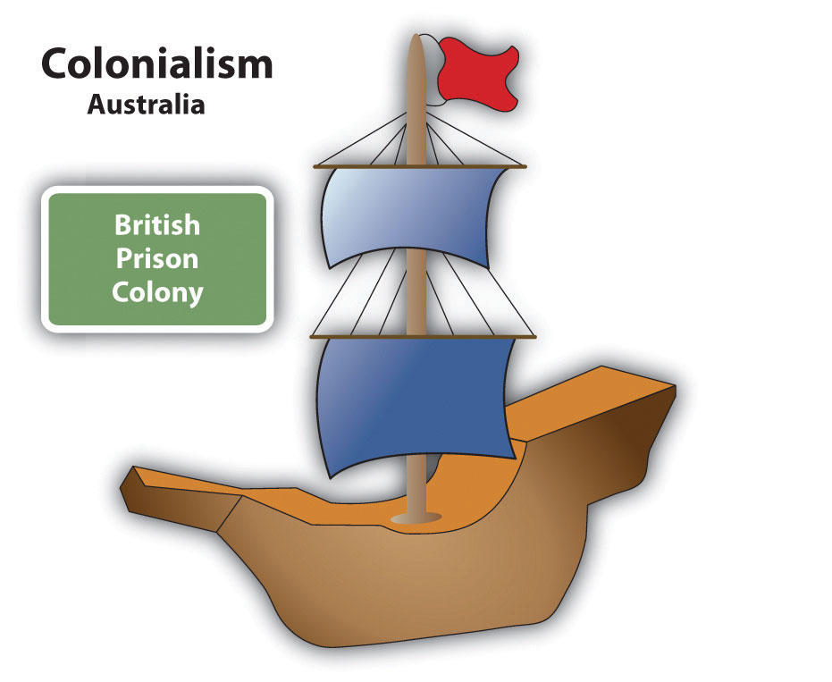Great Britain colonized Australia by establishing prison colonies. The prison colony of Botany Bay was located near the current city of Sydney, Australia.
In 1901, the various territories and states of Australia came together under one federation called the Commonwealth of Australia. A new federal capital city of Canberra was proposed. By 1927, Canberra was ready for government activity. This commonwealth government still allowed for individual state differences. The British monarch is considered the head of state, though it is mainly a ceremonial position. There have been movements within Australia in recent years to separate from the British Crown, but they have not been approved. Australia has a democratically elected government.
British naval officer James Cook mapped the coastline of New Zealand in 1769. As the colonial era emerged, Great Britain took possession of New Zealand and included it with its colony of New South Wales. In the 1840s, New Zealand became a separate crown colony. The colony developed a local parliament and a representative government. By 1893, New Zealand made headlines as the first country in the world granting all women the right to vote. As a part of the British Empire, the country was made a commonwealth nation in 1947 and has been functioning independently ever since.
Identify the following key places on a map:
There is an international attraction to the island continent of Australia, and the attraction has grown in intensity in the past few decades. Tourism is now the number one economic activity in Australia. Just slightly smaller in physical area than the continental United States, Australia is a large country with many resources but few people relative to its size. The Tropic of Capricorn runs right through the middle of this country. Australia hosts many unique species of plants and animals, including marsupials and a host of poisonous snakes and insects. With the advent of European colonialism, new species were introduced to the country, which regrettably caused the extinction of some of the native species but also gave Australia a wide diversity of organisms and natural conditions.
Australia is a relatively low-lying island with low relief. It is the flattest of all the continents. The various highland ranges are pronounced, but are not high in elevation. The Great Dividing Range is a mountain chain extending from Melbourne in the south to Cape York in the north. This low-lying range of highlands averages about four thousand feet and reaches an elevation of just over seven thousand feet at its highest peaks in the south. The largest river in Australia is the Darling-Murray River system that starts in the highland of the Great Dividing Range and flows inward through New South Wales, Queensland, Victoria, and South Australia.
The great interior of the country is home to the massive outback. Extending west from the Great Dividing Range, the outback encompasses most of the interior. This region receives less rainfall than along the coast and its terrain consists of deserts and semiarid plateaus with rough grasses and scrublands. The outback is sparsely populated, but is home to a number of aboriginal groups. Many of the school-age children in the outback have traditionally received their school lessons through television or radio broadcasts because of their isolation. Mining and some agricultural activities can be found in the outback. Alice Springs is located in the center of the continent and has been given the designation of the middle of nowhere, or the center of everything.
Figure 12.4 The Ghan (Train) Waiting at Alice Springs Station before Continuing North to Darwin
The remote town of Alice Springs is located at the center of the Australian outback.
Source: Photo courtesy of Mike Young, http://commons.wikimedia.org/wiki/File:Ghan_at_Alice_Springs.jpg.
The deserts of Australia’s interior make up a large portion of the continent. Western Australia has three large deserts: the Gibson Desert, Great Victoria Desert, and Great Sandy Desert. The Simpson Desert is located in the border region between the Northern Territory, Queensland, and South Australia. These deserts are not all sand; course grasses and various species of spinifex, a short plant that grows in sandy soil, also grow in the deserts. The Great Artesian Basin on the western edge of the Great Dividing Range receives very little rainfall. It would be classified as a desert but for its underground water resources, which support extensive farming operations. Large livestock businesses exist in Australia’s interior with massive herds of cattle and sheep. The grassy plateaus and scrublands provide grazing for domesticated livestock and even wild camels.
The Great Barrier Reef, the largest barrier reef in the world, extends for 1,600 miles off the northeastern coast of Australia. It is home to a host of sea creatures and fish that draw millions of tourists each year. The reef attracts scuba divers and water enthusiasts from around the world. The reef is a main tourism attraction and brings income to the Australian economy. The Great Barrier Reef has been designated as a United Nations World Heritage Site. Brisbane is located on the Gold Coast, which gets its name from the beautiful sandy beaches. The beaches attract an important tourism market for the country.
Figure 12.5 Aerial view of Uluru (Ayers Rock), Located in the Interior of Australia near Alice Springs
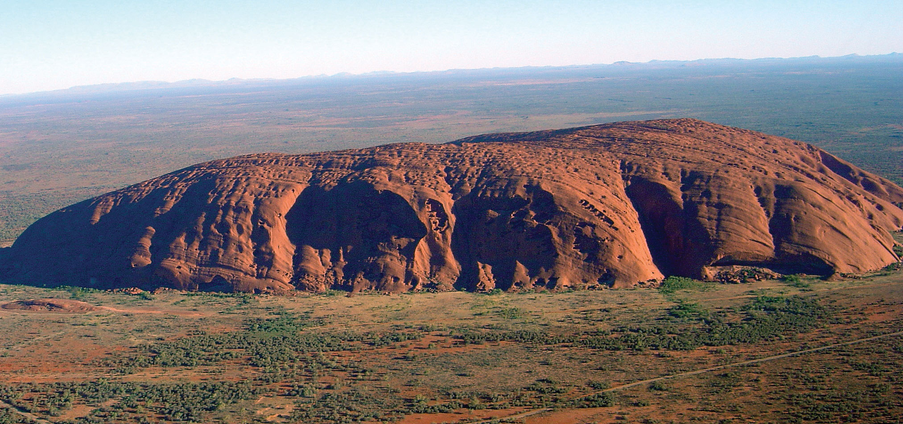The rock rises 1,142 feet above the outback and is 2.2 miles long. The site is sacred to the Aborigines and is a major tourist attraction. It is listed as a World Heritage Site.
Source: Photo courtesy of Huntster, http://commons.wikimedia.org/wiki/File:Uluru_%28Helicopter_view%29-crop.jpg.
A couple of large physical features of interest and significance to Australia are the two largest monoliths in the world. In western Australia, more than five hundred miles to the northeast of Perth, is Mt. Augustus National Park, which features the rock known as Mt. Augustus. It is considered to be the largest single rock in the world. Mt. Augustus rises 2,352 feet above the desert landscape. The single structure is about five miles long. Mt. Augustus is more than twice the size of the most famous Australian monolith of Uluru (Ayers Rock). Uluru is located about two hundred miles southwest of Alice Springs in the Northern Territory and is a well-known tourist attraction. Uluru rises 1,142 feet above the outback and is about 2.2 miles long. Both rocks hold significant cultural value to the aboriginal populations in Australia. They both have ancient petroglyphs, and both are considered sacred sites. Uluru has been more popularized through tourism promotions.
Central and western Australia are sparsely populated. Large areas of the Northern Territory and the desert regions are uninhabited. Approximately 40 percent of Australia’s interior is desert, where Type B climates dominate. The large land mass can heat up during the summer months, triggering high temperatures. Low humidity allows heat to escape into the atmosphere after the sun goes down, so there is wide temperature variation between day and night.
Along the northern coastal region there are more tropical Type A climates. Closer to the equator and with the sea to moderate temperatures, the northern areas around Darwin and Cape York have little temperature variation. Temperatures in Darwin average about 90 °F in the summer and 86 °F in the winter. Spring monsoons bring additional rainfall from February to March.
Tasmania, Victoria, and the core region of the southeast have a more moderate and temperate Type C climate. The main cities, such as Sydney, Melbourne, and Adelaide, are within this area. It is not surprising that there is a direct correlation between Type C climates and the major population areas. The Tropic of Capricorn cuts across the continent, indicating that the cities are not that far south of the tropics. Average winter temperatures in June and July do not usually fall below 50 °F and average summer temperatures in January and February remain around 70 °F. Since the seasons are reversed from that of the Northern Hemisphere, many Australians go to the beach for Christmas.
Figure 12.6 Australia’s Provinces and Territories and Their Respective Major Cities
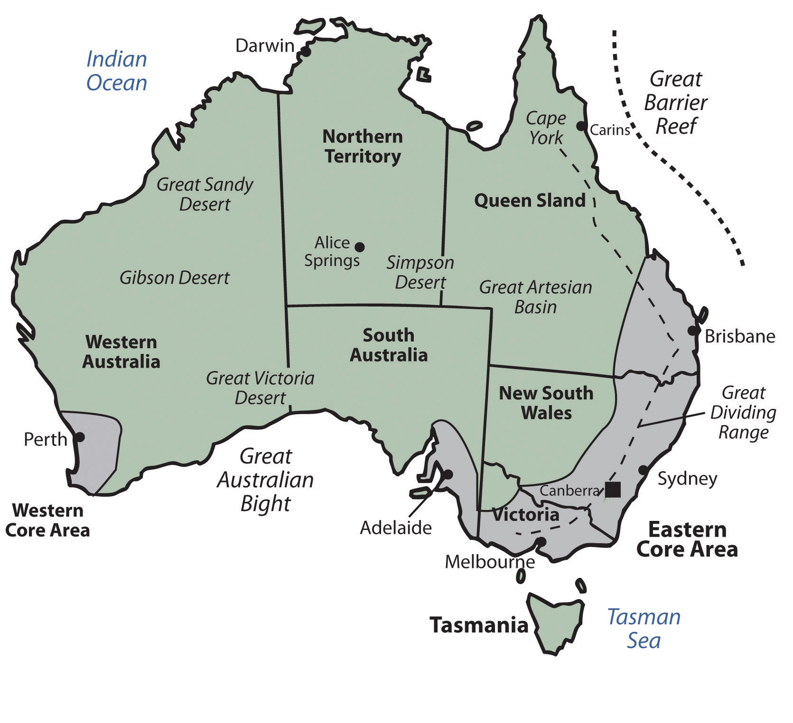The two core areas, where most of Australia’s population resides, are also noted. Not unexpectedly, the core areas have a dominant type C climate, following the general principle that humans gravitate toward type C climates.
Source: Updated from map courtesy of Golbez, http://commons.wikimedia.org/wiki/File:Australia_states_blank.png.
Australia is divided politically into six states and two territories. They are the Northern Territory, Australian Capital Territory, Western Australia, Tasmania, South Australia, Queensland, and New South Wales. Australian protectorates are composed of a number of small islands around Australia. Australian core areas are conducive to large human populations. To locate the core population areas in Australia, simply find the moderate Type C climates. Australia has two core regions. There is a small core region in the west, anchored by the city of Perth. Most of Australia’s people live in the large core region in the east along the coast. This region extends from Brisbane to Adelaide and holds most of the country’s population.
The total population of Australia in 2010 was only about twenty-two million. There are more people living in Mexico City than in all of Australia. More than 90 percent of this population has European heritage; most of this percentage is from the British Isles. English is the dominant language. Christianity is the dominant religion of choice. The makeup of the people is a product of European colonialism and immigration.
Only about 2 percent of the current population consists of Aboriginal people, the original people of Australia. Australia’s population has seen periodic growth spurts as waves of immigrants responded to national policies encouraging immigration. This was especially true after World War II. About 24 percent of the current population was born outside Australia; most come from the United Kingdom, and another large percentage comes from New Zealand. Asian countries have also contributed to the Australian population, with measurable numbers of immigrants from China, Vietnam, and the Philippines. And lastly, people from Italy and India also make up a notable proportion of Australia’s immigrant population.
Australia’s population is not spread evenly across the landscape, since a large portion of the country is desert. The population is concentrated mostly in the urban areas. About 90 percent of the population inhabits the cities, which are mostly in coastal areas. The largest city, Sydney, is often referred to as the New York of Australia. Sydney is positioned at the heart of the main core area, the state of New South Wales. To the south of Sydney is the Australian Capital Territory, home to the capital city of Canberra. Other major Australian cities include Melbourne, Perth, Adelaide, and Brisbane. Hobart is the largest city on the island of Tasmania and Darwin is the largest city in the Northern Territory.
Figure 12.7 The Sydney Opera House Viewed from the Water with the City Skyline
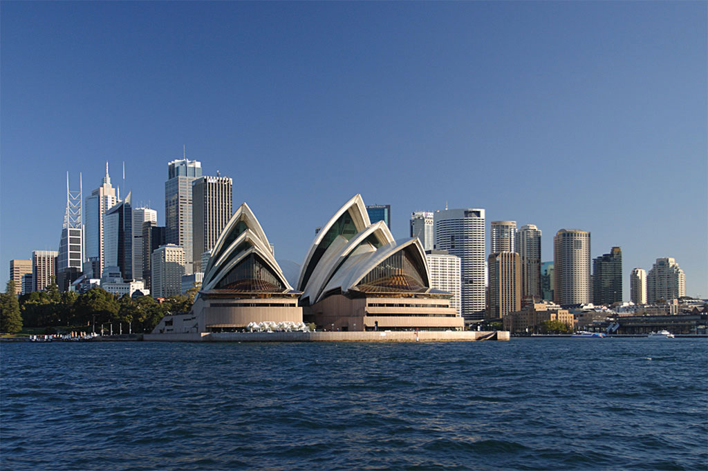Source: Photo courtesy of Matthew Field, http://commons.wikimedia.org/wiki/File:Sydney_opera_house_and_skyline.jpg.
All the large cities of Australia—with except the planned capital city of Canberra—are located on the coast. This pattern of urban distribution was a product of European colonial development. Most of Australia’s population lives in the two economic core regions, so Australia exhibits a distinct core-periphery spatial pattern. The core areas hold the power, wealth, and influence while the periphery region supplies all the food, raw materials, and goods needed in the core. Australia has never had a majority rural population since its Aboriginal times. There has been little rural-to-urban shift in Australia’s population. This is similar to Japan’s urban development pattern.
English is the first language of the vast majority of the population. Recently enacted policies and changing attitudes toward multiculturalism have spurred growth in the number of immigrants and their descendants who speak two languages fluently—English and the language of their birthplace or national heritage. Indigenous languages have not fared so well. As many as three hundred indigenous languages were spoken by AboriginesPeople native to Australia when the European colonialists arrived. before the Europeans arrived, and just a few hundred years later, that number now stands at about seventy. Most aboriginal languages are in danger of dying out.
Until 1973, Australia had a collection of laws and policies known as the White Australia policy, which served to limit the immigration of nonwhite persons to Australia. While the White Australia policies limited immigration from some areas, other policies sought to expand immigration from the United Kingdom. Subsidies were offered to British citizens to relocate to Australia. Between 1830 and 1940, more than a million British citizens took advantage of the offer.
Recent census data indicate that about a quarter of the population identifies itself as Roman Catholic and another 20 percent self-identifies as Anglican (the national religion of the United Kingdom). An additional 20 percent self-identify as Protestant, other than Anglican, and about 15 percent as having no religion. Regular church attendance is claimed by at about 7.5 percent of the population. Despite modern Australia having been settled by the British, Australian law decrees that Australia will have no national religion and guarantees freedom of religion.
Sports are an important part of Australian culture, perhaps owing to a climate that allows for year-round outdoor activity. About a fourth of the population is involved in some kind of organized sports team. Football (soccer) is popular, as is true in most European countries, and rugby and cricket are popular as well. The most popular spectator sport in Australia is Australian Rules Football, also known as Aussie Rules Football, or simply “footy.” This uniquely Australian game has codified rules that date back to 1858 and is a variant of football and rugby. Other forms of entertainment include television, film, and live performances of every kind. Although Australia has a number of its own television stations, there are concerns that popular culture is beginning to be dominated by American influences. Australia’s large cities have extensive programs in the arts. Sydney is becoming a center for world-class performances in dance, opera, music, and theatre.
Education is well funded and internationally respected. School attendance is compulsory between the ages of six and fifteen, and the adult literacy rate has held steady at about 99 percent. Most students attend publicly funded schools, which are secular. Private schools, which charge tuition fees, do exist and are typically run by religious organizations, predominantly the Catholic Church.
Most of Australia—especially the wide expanse of the arid interior known as the outback—has immense open spaces, agricultural potential or excellent resource extraction possibilities. The extensive grasslands support tens of millions of domesticated animals—mainly cattle and sheep—which accounts for up to one-fifth of the world’s wool production. Large agricultural businesses include thousands of acres under one operation. The western sector of the Great Dividing Range in New South Wales is an excellent region for commercial grain operations. The coastal region in Queensland, since it is warmer and receives more rainfall, is good for sugarcane and similar crops. Sheep and cattle ranches are common in central Queensland and Western Australia. Various regions of southern Australia are excellent for grape and fruit production. Australian wine production has risen to compete with the US and European markets. Only the dry central desert regions in the center of the continent are not favorable for agriculture. In the early portion of the twentieth century, Australia gained enormous wealth by exporting food products to the rest of the world. This is still true, but the profit margin on food goods is no longer what it used to be. The country has had to look elsewhere to gain wealth.
Figure 12.8
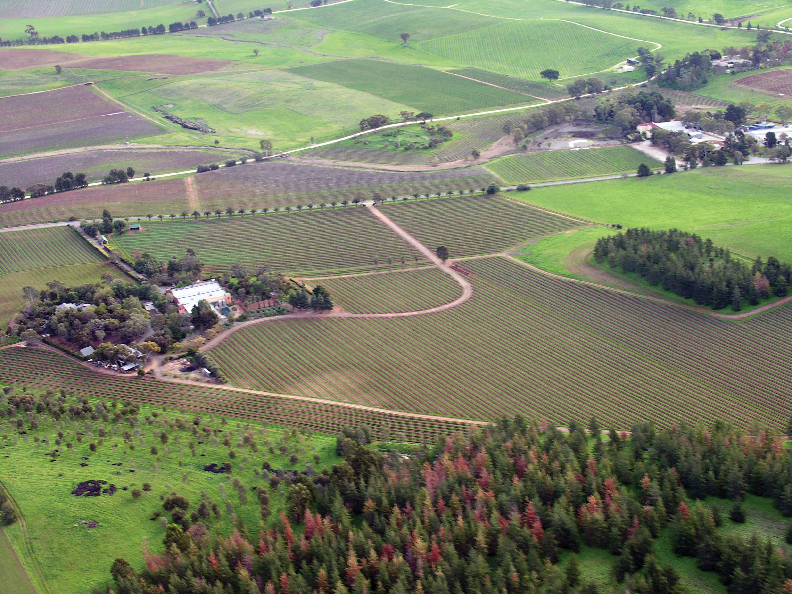The agricultural region of the Barossa Valley in South Australia grows grapes and produces wine. Agricultural production is a major source of economic wealth for Australia even though only 11 percent of the population lives in rural areas. Australia’s wine production is expanding to compete in the global marketplace, with France and California as major competitors.
Source: Photo courtesy of Louis Roving, http://commons.wikimedia.org/wiki/File:Barossa_Valley_South_Australia.jpg.
Australia has excellent food production capabilities. It also has an excellent mineral resource base. Different types of minerals can be found in different regions throughout Australia. Western Australia has iron ore mines. The eastern region of Queensland and New South Wales has abundant coal reserves. Minerals such as zinc, copper, gold, silver, tungsten, and nickel can be found in various parts of the country, including Tasmania. Oil and gas fields can be found in the northwestern coastal waters and in the Tasman Sea east of Melbourne. The country is self-sufficient in natural gas but does have to import some petroleum products.
Figure 12.9 Australia’s Distribution of Raw Materials
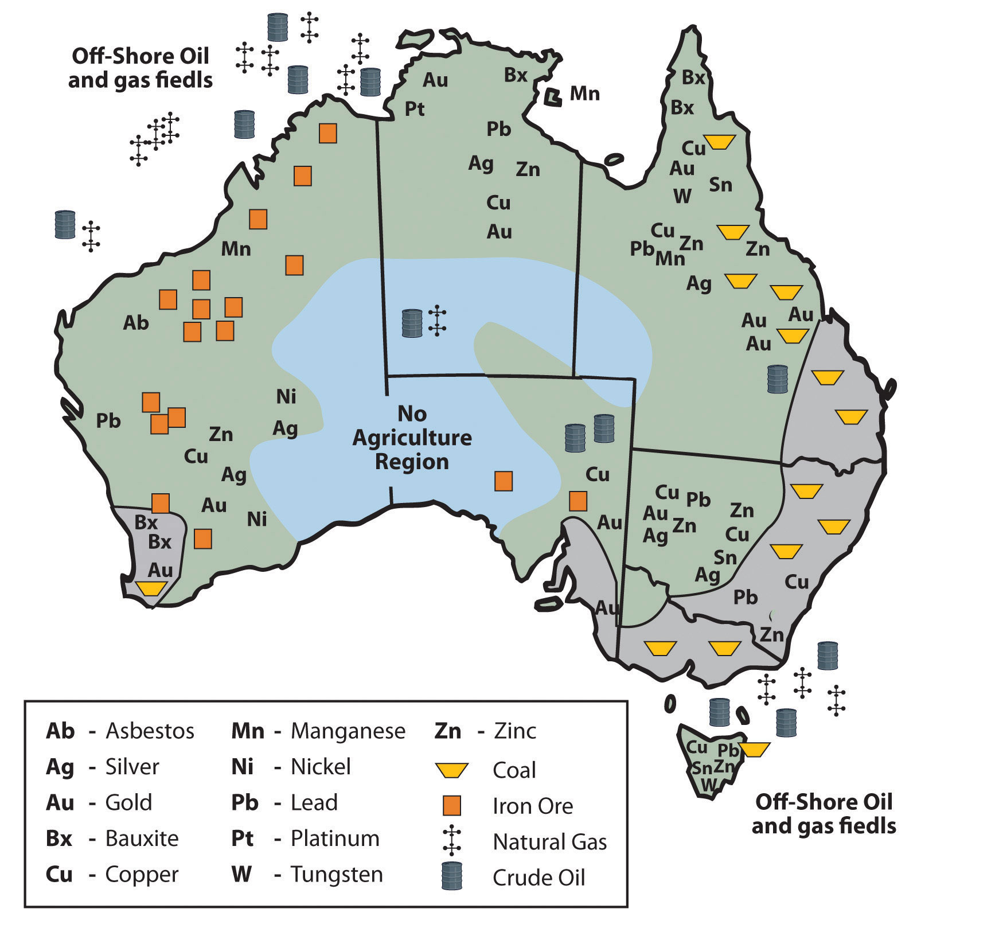Source: Updated from map courtesy of Golbez, http://commons.wikimedia.org/wiki/File:Australia_states_blank.png.
Are any Australian-manufactured products available where you live? What products can you think of? Australia does not export many manufactured goods. Its main exports are food and raw materials. If you remember how countries gain wealth, the method with the highest valued-added profit is manufacturing. Think about Japan and the four Asian economic tigers, and how they have gained their wealth. The economic tigers have few raw materials. Where do you suppose the economic tigers and Japan get their raw materials? With Japan’s enormous manufacturing capacity, it has a high demand for imported iron ore, minerals, and raw materials. Though Australia is a former British colony, Great Britain is not considered Australia’s largest trading partner. Australia is closer geographically to the Asian economic community than to the European Union. Japan has become Australia’s biggest trading partner. When Australia is viewed in the news, in television programs, and in Hollywood movies, it is portrayed as a country with a similar standard of living to the United States or Europe. How do Australians have such a high standard of living if they don’t manufacture anything for export? To evaluate this, think about the size of the population of Australia and consider the distribution of wealth. They export an immense amount of raw materials and have a relatively small population to share the wealth.
Figure 12.10 Bondi Beach
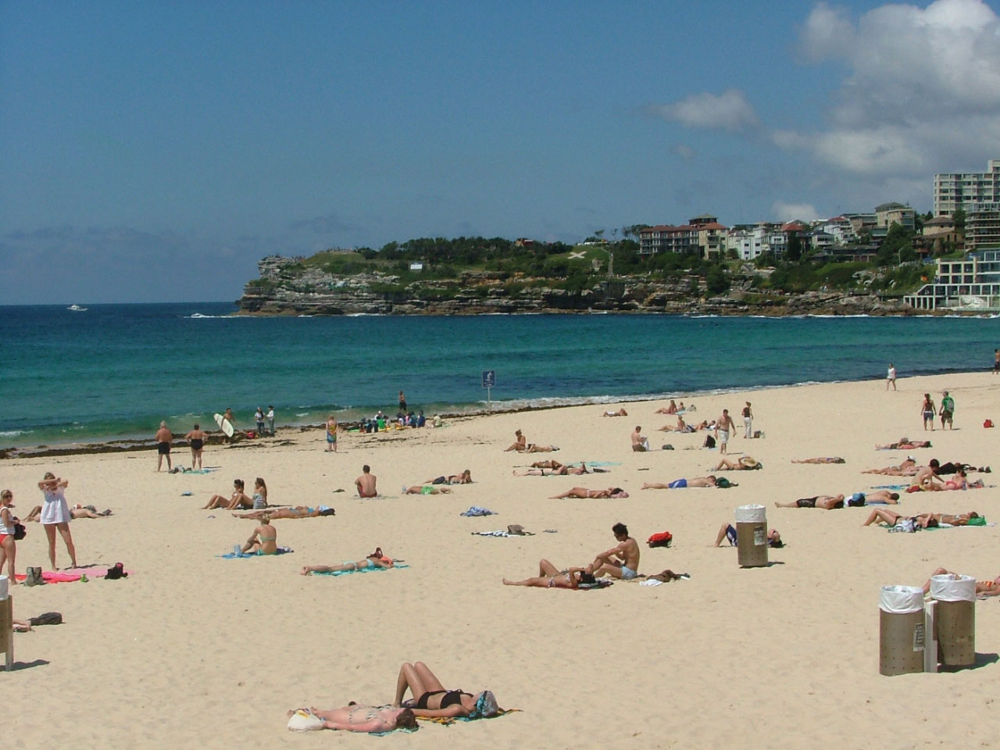The Gold Coast of eastern Australia draws tourists from the Northern Hemisphere throughout the winter season. It is called the Gold Coast because of the long stretches of golden sand beaches, the golden tanned bodies of beach goers, and the high level of income (gold) derived from the tourism industry.
Source: Photo courtesy of Dingy, http://commons.wikimedia.org/wiki/File:Bondi_beach_en_novembre.JPG.
Australia is an attractive place to visit. The environment, the animals, and the culture make it inviting for tourism. As of the year 2002, tourism has become Australia’s number one means of economic income. From the Great Barrier Reef and the Gold Coast to the vast expanse of the outback, Australia has been marketing itself as an attractive place to visit with great success. Tourism from Japan provides a large percentage of the tourist activity. Australia has moved through the initial stages of the index of economic development to become a society that is about 90 percent urban with small families and high incomes.
Territorial control of Australian lands has become a major issue in recent years. Large portions of western Australia and the outback have traditionally been Aboriginal lands. European colonialism on the Australian continent displaced many of the native people. Large sections of land once used by the Aborigines were taken over by the government or by private interests. Large agricultural operations and mining operations have used the lands without adequate compensation to the Aboriginal people who once controlled them. Court rulings aimed at reparation for native people have had mixed results.
There are as many as four hundred different groups of Aborigines currently in Australia that make up a total population of about four hundred fifty thousand. This is a small percentage of Australia’s population but involves a large part of the physical area of the country. Their land claims include all of the Northern Territory, a large portion of western Australia, and parts of South Australia and Queensland. This is in addition to claims located within many urban areas, such as the largest city, Sydney. Mining operations on Aboriginal lands have become highly regulated. Concerns have arisen that Australia’s extractive industries will diminish, causing a decline in the economy. The concern for the Aboriginal population has increased in the past few decades and the government has made attempts to mediate their political and economic issues as well as strengthen programs that address their social welfare.
The economic future of Australia is complex. Though tourism has become a viable means of providing income, Australia must import manufactured products that it does not produce locally, including electronic goods, computers, and automobiles. Import dependence has increased its trade deficit. Trade agreements and protectionism have become a part of the economic puzzle of how to sustain a competitive standard of living. Australia is located next to the Asian realm. Its economy, culture, and future are becoming more Asian. Immigration has been an issue in that the government has always restricted immigration to ensure a European majority. Millions of Asian people would like to migrate to Australia to seek greater opportunities and advantages, but they are legally restricted. It is becoming more difficult for Australians to hold to their European connections with such an Asian presence. How the country will handle this situation in the future will prove interesting.
Identify the following key places on a map:
Figure 12.11 Southern Alps, New Zealand
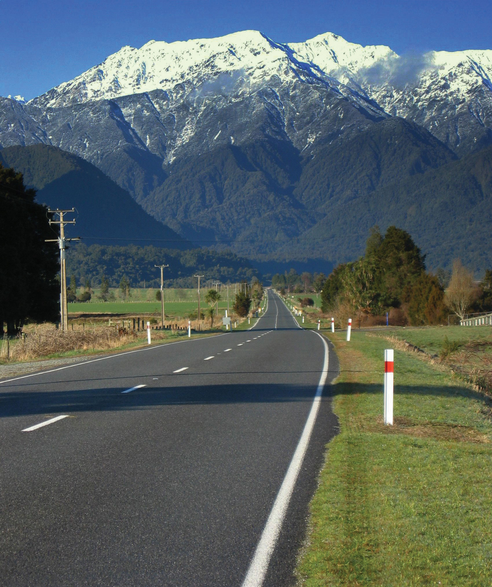Source: Photo courtesy of Remember, http://commons.wikimedia.org/wiki/File:Mountains_in_New_Zealand.jpg.
To the east of Australia across the Tasman Sea is the country of New Zealand. New Zealand is one of a number of sets of islands that make up Oceania, also referred to as the Pacific Islands, a region occupying the western and central Pacific Ocean. The Pacific Islands region is generally divided into three subregions: Micronesia, Melanesia, and Polynesia, with New Zealand being part of Polynesia. The Pacific Island region includes more than twenty-five thousand individual small islands representing twenty-five nations and territories. Most of these islands are very small. The South and North islands of New Zealand are the second- and third-largest islands, respectively. The North and South Islands of New Zealand are separated by a body of water known as the Cook Straight, which is only about thirteen miles wide at its narrowest point. The North and South Islands together are about the same size as the US state of Colorado. New Zealand also includes a number of smaller nearby islands.
New Zealand, like Australia, is in the Southern Hemisphere, which means that its seasons are expressed at the opposite times of the seasons in North America. In other words, the warmest summer months are January and February and the cooler winter months are June and July. New Zealand lies within the Temperate Zone. There are only very moderate seasonal differences, which are slightly more pronounced in the inland areas because the inland areas lack the moderating influence of the ocean. In general, the North Island has somewhat warmer average temperatures than the South Island. In summer, average low temperatures are about 50 °F, with daytime highs around 75 °F. In the winter months, low temperatures average about 35 °F and high temperatures are about 50 °F. The occurrence of more extreme temperatures is limited to the mountainous peaks of the Southern Alps. Snow is common in these mountainous regions but rarely occurs in coastal regions.
Figure 12.12 New Zealand
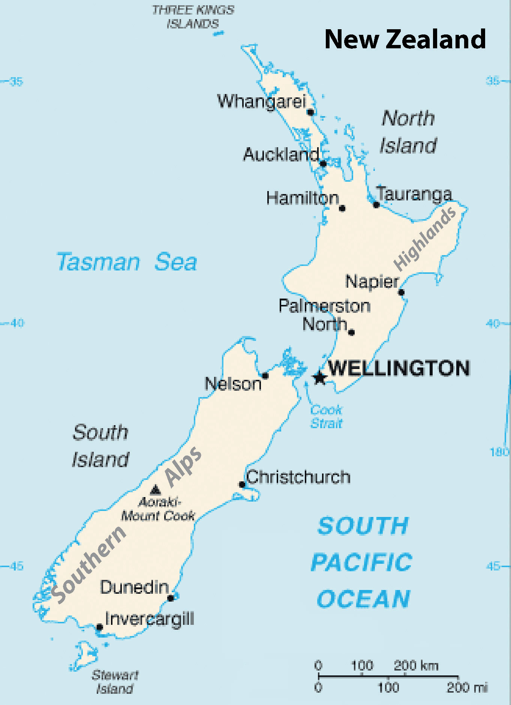Wellington is the capital, Auckland is the largest city in the country, and Christchurch is the largest city on the South Island. The Southern Alps extend along the western length of the south and reach elevations of twelve thousand feet.
Source: Updated from map courtesy of CIA World Factbook.
Rainfall is heaviest on the western coasts of both islands, but especially on the South Island. The prevailing westerly winds, carrying moisture from the ocean, come in contact with the mountains of the Southern Alps and high precipitation results. The mountains also have the opposite effect. On the eastern side of the mountains is a rain shadow where the westerly winds blow hot, dry air and the eastern coasts are therefore substantially drier than the western coasts. Therefore, average precipitation rates vary widely across the country. The average annual rainfall in Christchurch, which is on the eastern coast of the South Island, is about twenty-five inches per year. Auckland, in the midportion of the North Island, receives twice that amount and areas on the wetter western coast receive as much as one hundred fifteen inches per year.
As an island nation, New Zealand’s coastlines and oceans are some of its most important geographic features. New Zealand has one of the world’s largest exclusive economic zones, an oceanic zone over which a nation has exclusive rights of exploration and exploitation of marine resources. New Zealand’s exclusive economic zone covers more than one million square miles. The dramatic nature of New Zealand’s landscape is well known to many moviegoers as the landscape of Middle Earth, as depicted in New Zealand film director Peter Jackson’s version of J. R. R. Tolkein’s Lord of the Rings.
The North Island of New Zealand features a rather rugged coastline with numerous harbors, bays, and inlets. The port cities of Auckland and Wellington are located on two of the largest bays. The coastline of the South Island is somewhat more regular, except along the southern portion of the eastern coastline, which has deep fjords. Though the North Island has lower relief than its southern counterpart, its few mountains are volcanic in origin. The two main islands are accompanied by smaller islands around their shores. The North Island’s highest peak is Mt. Ruapehu, which reaches almost 9,175 feet and is an active cone volcano. It is located in the south central part of the island. A range of highlands runs along its eastern side. The volcanism associated with Mt. Ruapehu results from New Zealand’s location atop two tectonic plates: the Pacific Plate and the Indo-Australian Plate. The boundary of these two plates forms a subduction zone under the North Island; consequently, New Zealand experiences tens of thousands of earthquakes per year. Though most of the earthquakes do not greatly disrupt human activity, some have registered higher than 7 on the Richter scale. New Zealanders have made use of the geothermal power generated by this and the tectonic features of this area and hence, New Zealand is home to several hydrothermal power plants.
A range of mountains, the Southern Alps, divides the South Island lengthwise. Many of the peaks reach over ten thousand feet. The highest peak is Mt. Cook, which reaches higher than twelve thousand feet. These mountains are also formed by the area’s tectonic situation. However, the two plates meet in a different way under the South Island. Rather than creating a subduction zone, the plates move laterally. The lateral movement created the South Alps. New Zealand’s location places it along one of the edges of the so-called Ring of Fire, which encircles the Pacific Ocean basin. The positions and activity of the tectonic plates in this zone cause most of the world’s earthquakes and have formed more than 75 percent of the world’s volcanoes.
Figure 12.13 The Supercontinent of Pangaea about Two Hundred Million Years Ago
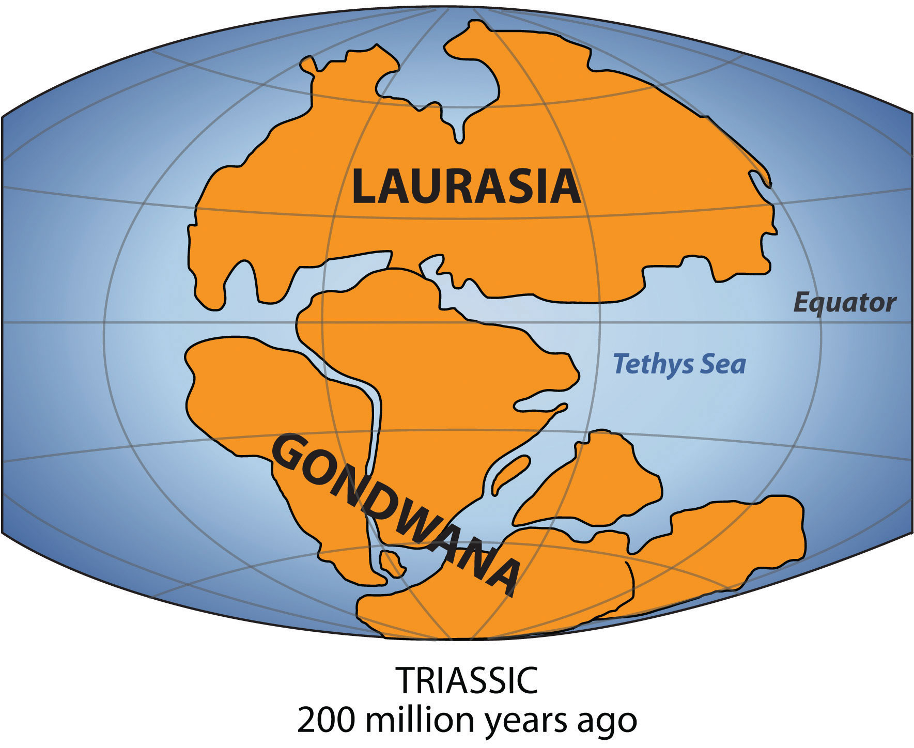The southern portion was called Gondwana (Gondwanaland). New Zealand and Australia come from Gondwana; their origin explains why their fauna and flora are so unique.
Source: Map courtesy of Lenny222, http://commons.wikimedia.org/wiki/File:Laurasia-Gondwana.svg.
New Zealand has a fascinating ecological history. New Zealand was once part of Gondwana, also known as GondwanalandPangaea was a supercontinent in very ancient times. Between about two hundred to five hundred million years ago, Gondwana was the southern portion of Pangaea and included most of the land in what is today the Southern Hemisphere.. About two hundred to five hundred million years ago, Gondwana was the southern portion of the supercontinent of Pangaea. Gondwana included most of the land in what is the Southern Hemisphere today, including Australia and New Zealand. Over time, through various forms of tectonic activity, the earth’s plates shifted and the supercontinent of Gondwana broke apart, leaving New Zealand geographically isolated for millennia. The species of flora and fauna found in New Zealand either descended from the species found on Gondwana, flew there, floated there via the ocean, or were brought by people.
New Zealand’s geological history has laid the groundwork for more than 2,000 indigenous plant species, about 1,500 of which are found nowhere else in the world. The biomes of the North Island include a subtropical area, including mangrove swamps, an evergreen forest with dense undergrowth of mosses and ferns, and a small grasslands area in the central volcanic plain. The South Island biomes include extensive grasslands in the east, which are excellent for agricultural pursuits; forest areas, dominated by native beech trees in the west; and an alpine vegetation zone in the Southern Alps.
In terms of fauna, the most influential factor may be the relative absence of predatory mammals, again related to New Zealand’s geological history. With few ground predators and a favorable climate, bats, small reptiles, and birds were able to thrive and flourish. Without predators, many species of birds became flightless, such as the noted Kiwi. New Zealand’s most famous bird, the moa, was similar to the ostrich but is now extinct. Moa could grow to more than twelve feet high and weigh more than five hundred pounds. New Zealand is known for its large number of species of wild birds. The Kiwi is the most noted and is often used to refer to people from New Zealand, as it is the national symbol of the country.
New Zealand has a variety of landscapes that have been attractive for economic activity and tourism. The South Island is larger than the North Island and is more mountainous. The snowcapped peaks of the Southern Alps run the western length of the South Island. Large livestock-raising operations and agricultural activities can be found on the vast grasslands of the South Island. Millions of sheep and cattle are raised on the grassy highlands and the valley pasturelands. The North Island has more low-lying terrain, which is also good for agriculture and is home to a large dairy industry. The central highlands of the north offer some rugged relief and provide for a diverse physical landscape.
New Zealand is home to many Polynesian groups. Its original inhabitants were the MaoriPolynesian people living in New Zealand when the European colonialists arrived., who came to the islands around the tenth century. They grew crops of gourds and sweet potatoes. Fur seals were hunted regularly, as were moa, which were hunted to extinction before the Europeans arrived. The Maori had created extensive trading networks with other island groups and developed a heritage of traditional rituals and cultural ways. The Maori culture thrived for hundreds of years and was well established in New Zealand before the arrival of the colonial ships from Europe.
Britain was the main colonizer of the islands. The British settled in to establish their presence and gain control. In 1840, the British colonizers and the Maori signed the Treaty of Waitangi, which granted British sovereignty over the islands but allowed the Maori certain rights over tribal lands. The actual language in this treaty has been debated between the English version and the Maori version. Over time the tribal lands were codified into legal arrangements by the European colonizers. Since the Treaty of Waitangi, the situation has evolved, with subsequent land exchanges, some legal and others questionable. The Maori have complained about unfair treatment and the loss of land and rights in the process. These issues have finally reached a point of negotiation in the past couple of decades. Starting in the 1990s, treaty settlements have been made to help correct the actions of the colonial activity and compensate the Maori for the conditions they were subjugated to.
Figure 12.15 A Maori Man with Traditional Topknot and Tattoos
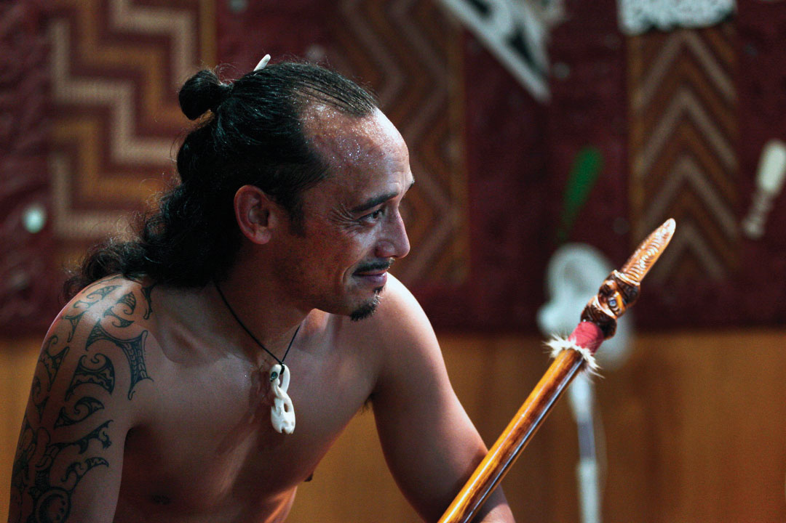Many Maori participate in performances in New Zealand both for tourism and to maintain their heritage and traditions.
Source: Photo courtesy of Steve Evans, http://www.flickr.com/photos/babasteve/5397152967/in/photostream.
Most of the Maori have lived on the North Island. They were a real concern for the European colonizers. Claimed by Great Britain in their colonial empire, the country of New Zealand became independent of Britain in 1901. In 2010, the estimate of the population of the country was at about 4.3 million, with Europeans making up 60 percent of the population and the Maori making up about 8 percent. There are also many people who are of mixed ethnic background, including Maori and other groups. Asians, Polynesians, and other ethnic minorities make up the rest. New Zealand’s main religion is Christianity and English is the official language.
The Maori have not been integrated into New Zealand society to the same extent as Europeans have. The Maori now join the ranks of other Pacific Islanders that have moved to New Zealand from Samoa, Tonga, Cook Islands, and many other places in the South Pacific. New Zealand’s urban areas reflect diversity in the various cultural landscapes and ethnic communities that have established themselves in specific neighborhoods within the main cities. A common dilemma with all peoples is the draw to return to their heritage and roots, which typically results in a more traditional lifestyle with stronger cultural ways. At the same time, the modern world pulls people toward a more global and cosmopolitan culture that is steeped in modernity with changing fashions. The Maori and other ethnic groups in New Zealand find themselves facing this dichotomy of societal dynamics.
Land and climate could be said to be New Zealand’s most important natural resources. Fertile soils and a mild climate, complete with thousands of hours of sunshine annually, create ideal conditions for agriculture. Grass continues to grow throughout the year, which means that sheep and other livestock can be well grazed. Wool and other agricultural products, notably meat and butter, are important exports for New Zealand’s economy. Healthy forests produce timber products, which are important to the economy as well. Some of New Zealand’s natural resources are found underground, including coal, natural gas, gold, and other minerals.
Wellington is the capital of the country and is located on the southern end of the North Island. Wellington is one-fourth the size of the primary city, Auckland, which has 1.2 million people and is located in the north. The major cities are located along the coastal regions and provide a connection to sea transportation. Christchurch is the largest city of the South Island and is located along the eastern seaboard on the productive Canterbury Plain. The soils and conditions on the Canterbury Plain are excellent for productive agriculture of all types. Coastal plains also provide access to building transportation systems of highways and railroads that are more costly to construct in the mountainous regions of the Southern Alps or the northern highlands.
The modern cities are home to a multitude of processing centers preparing the abundant agricultural products for domestic consumption and for export products. The ever-growing populations of Asia and the rest of the world continue to place a high demand on food products and welcome New Zealand’s agricultural exports. In relation to how countries gain wealth, agricultural profits are usually quite competitive and normally provide a low profit margin. New Zealand does not gain a large part of its national income from mining or manufacturing, though these industries do exist. The high standard of living that exists in New Zealand is similar to that of Australia in that the population is not very large, so that the national wealth can be distributed via the private sector economy to accommodate a relatively good lifestyle and provide for a comfortable standard of living.
New Zealand has a market economy. The mainstay of the economy is, and has been for many years, a productive agricultural sector that has been geared toward export profits. New Zealand’s climate and soils help give it a place in the economy of the region through agricultural exports. A “wool boom” in the 1950s furthered the emphasis on agricultural products as tremendous profits accrued in the wool production and export industry. Today, New Zealand’s economy is still heavily focused on the export of agricultural products, though the economy has diversified into other areas such as tourism and exploitation of natural resources, especially natural gas. The development of hydroelectricity generation in recent years has been important to the economy.
Identify the following key places on a map: